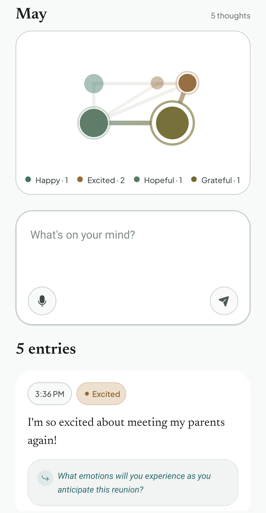
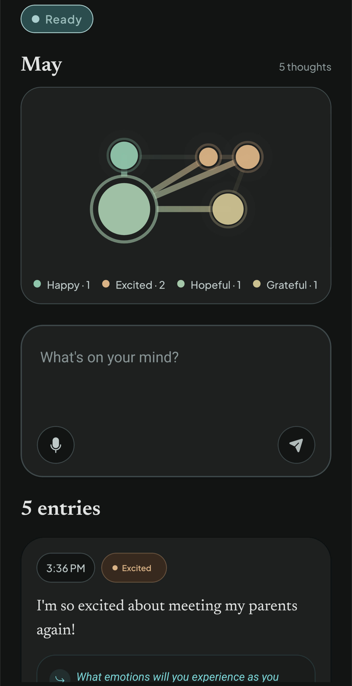

Name what you're feeling.
Putting a feeling into a sentence loosens its grip.
Locket reads what you wrote, finds patterns, and asks a question worth sitting with. Instantly, because the AI runs on your phone.


Why journal
Putting a feeling into a sentence loosens its grip.
One thought is a moment; many are a shape. Your month fills with mood‑tinted dots.
Locket offers a cue drawn from your own words — not advice, not analysis.
Expressive writing has been studied since the 1980s. Decades of research link it to lower rumination, better mood, and improved wellbeing.
Thought cloud
Each thought becomes a mood‑tinted dot. They cluster around what you've been carrying — joy, anxiety, hope, the in‑between — whether you wrote once today or six times. The shape is yours to read.
On your phone
Questions
On‑device models are smaller than cloud‑frontier ones. For what Locket does — naming a feeling, asking a better question — that's a fine trade. And because there's no network round‑trip, the smaller model often feels faster than a bigger one would.
An account would mean your entries living somewhere other than your phone. Locket trades cross‑device sync for an architecture that doesn't ask you to trust a server.
Your entries live in the app's storage on the device. Uninstalling removes them; nothing is copied anywhere else.